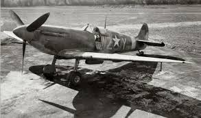

SPITFIRE MK.I

Одноместный истребитель, одномоторный цельнометаллический моноплан. Опытный Spitfire (Prototype K5054) совершил свой первый полет 06.03.1936, серийное производство истребителей этого типа началось в мае 1938 г, а с августа того же года они появились в строевых частях RAF.
Самолеты семейства Spitfire стали лучшими истребителями RAF и одними из лучших истребителей периода Второй мировой войны.
Истребители первой серийной модификации Mk.I были оснащены крылом типа «А» с 8 крыльевыми пулеметами Colt-Browning Mk.II калибра .303 (7,7-мм). С 194-го серийного самолета V-образный рядный двигатель жидкостного охлаждения Rolls-Royce Merlin II заменили на Merlin III. На первых серийных Spitfire стояли двухлопастные деревянные винты постоянного шага. С 74-го самолета внедрили трехлопастной металлический винт De Havilland 5/21. К концу 1939 г. стандартным стал винт-автомат De Havilland 5/20, тоже трехлопастной, металлический. Этими винтами оснастили большую часть Spitfire.
Все первые серийные истребители комплектовались примитивными механическими прицелами в виде кольца и мушки. Только в июле 1939 г. на вооружение приняли более совершенный коллиматорный прицел GM2 Mk.II. Машины более раннего выпуска оснащались им уже в строевых частях
С появлением в середине 1940 г. пушечной модификации Spitfire Mk.IB с крылом типа «В» самолеты с пулеметным вооружением получили обозначение Spitfire Mk.IA.
Истребители Spitfire Mk.IA пошли в бой с первого дня Второй мировой войны, активно участвовали в «Битве за Британию», став одним из факторов, принесших победу RAF над Люфтваффе. В течение 1941 г. их сменили в строевых частях Spitfire Mk.V. Всего было построено 1567 машин модификации Mk.I.
|